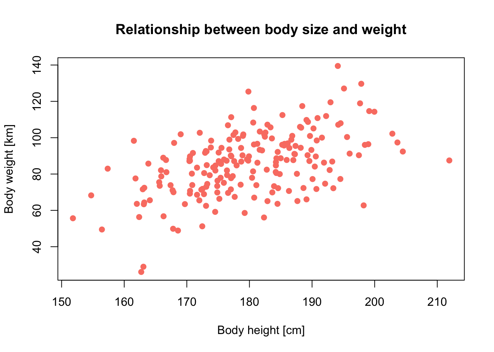
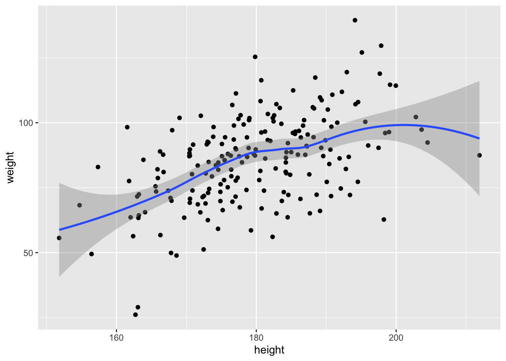

Introduction to R
1 Getting start in R
This tutorial provides a very brief recap of R basics. The materials are prerequisite for the remainder of the course. I highly recommend looking also at other tutorials (e.g. by Adam Wilson, by Data carpentry, or by Paul Torfs and Claudia Brauer) and books (e.g. R for Data Science, or Crawley (2007)). The RStudio cheat sheets are also very helpful!
What is R?
- a very flexible, open source programming environment for (statistical) data analyses and visualisation (www.r-project.org)
- an object oriented and interpreted programming language based on the S language
- runs on all common operating systems
How to operate R:
- R is operated from the command line
- work with script files for easier tractability, recycling and modification of commands
- scripts also allow you to send big chunks of code or the entire script to the R console
- scripts are the first step for automatizing your data manipulation and analyses
- R has a built-in editor, but many people nowadays use R Studio (http://rstudio.org/) or other text editors
1.1 Console and prompt
In the R console you will find the symbol >:
>This is the so-called prompt, which asks you for the next command. If you see a + instead, then the former command is not completed yet, and R waits for further arguments (maybe you have forgotten the closing bracket?).
20 * (5 - 3
)A line break or a semicolon (;) separates commands.
2 + 3; 2 + 4Anything following a hashmark #, will be interpreted as comment and will, thus, not be executed.
1 + 3
# 1 + 3Upon opening a new R session, some useful information will be printed to the console, mainly on version number and copyright. You can also extract this and other useful information by typing commands, e.g.
sessionInfo()
citation()The last command is important for citing the correct packages in your theses or any other publication.
You could type all code examples that are listed here, directly into your R console. You can access them by the cursor keys. However, I highly recommend storing everything into a script file.
1.2 Working directory
R is always pointed at a specific directory on your computer, the working directory. You can check the current working directory by typing:
getwd()The command for setting a working directory is setwd(). Check out the help page:
?setwdExercise:
Set up a course folder on your computer and set your R working directory to this folder.
See the files contained in your folder:
dir()1.3 Workspace
You can list all objects in your workspace by typing ls().
ls()Probably you workspace does not list any objects yet. We can remove objects from the workspace using rm().
x <- 20
y <- 30
z <- 40
ls()
rm(x) # removes one or more objects
rm(list=ls()) #removes all objects from workspace1.4 Load and install packages
There are thousands of additional packages available for R. You can see the list of installed packages by typing: library()
The same command is used for loading a specific package into the workspace = make it available for this session:
# loads the package raster:
library(raster)
# removes package from current workspace:
detach(package:raster)If you don’t have the packages above, install them in the package manager or by running
install.packages("raster", dependencies=T)1.5 Getting help
R comes with an extensive, built-in help system, and several manuals, help pages for every available function and many additional documents.
You can access the built-in manuals by typing:
help.start()Help pages for specific functions can be accessed with help() or with abbreviation ?.
# help page for arithmetic mean:
help(mean)
# the same:
?meanMost functions come with examples:
example(mean)Some function calls need to be surrounded by quotation marks when calling help, e.g. special characters or expression with syntactic meaning such as if, for und function.
?"*"
?"if"If you have forgotten the exact name of a function, you can search all function names, titles and keywords by typing:
help.search("mean")
# the same:
??meanSearch through all (installed) functions that contain the word in their function call:
apropos("mean")Look at all functions contained in any package by typing:
library (help = base)Some package authors offer additional documents or tutorials called vignettes:
# list all available vignettes of the installed(!) packages:
vignette()
# opens the vignette as pdf:
vignette("Raster")2 Operators and Objects
2.1 Operators
You can use R as simple calculator. Simply type in the expressions; they will be executed immediately.
1+2*3
(1+2) * 3
2 * 5 - prod (2,5)
sqrt(25^2)
sin(pi/2)
0/0Check out ?Syntax to learn about the precedence of operators. If in doubt (or simply for better overview) use round brackets.
Useful arithmetic operators:
^or**: power*//: multiplication / division+/-: addition / subtraction%/%/%%: integer division / modulo
Useful mathematic functions:
max(),min(),range(): extreme valuesabs(): absolute valuessqrt(): square rootround(),floor(),ceiling(): roundsum(),prod(): sum, productlog(),log10(),log2(): logarithmexp(): exponential functionsin(),cos(),tan(),asin(),acos(),atan(): trigonometric functions
Numeric constants:
pi: the number \(\pi\)Inf,-Inf: infinityNaN: not defined (not a number)NA: Missing value (not available)NULL: empty value
2.2 Variables/Objects
In principle, all data structures and functions are objects in R. You can get a list with all objects contained in the current workspace by typing:
ls()We can assign own objects using the assignment operator/arrow <-.
x <- seq(1,5)The results of any operation assigned to an object are usually not printed in the console. If you want to see the results in real time, simply enclose the entire command in brackets:
(x <- seq(1,5))## [1] 1 2 3 4 5R is case sensitive. X is not the same as x.
X=1
ls()Naming variables/objects:
There is no single naming convention in R. Even in the same package, multiple conventions might be used simultaneously. But usually, it’s advisable to stay consistent. Basically, thera are five naming conventions to chose from:
- alllowercase: e.g.
adjustcolor - period.separated: e.g.
plot.new - underscore_separated: e.g.
numeric_version - lowerCamelCase: e.g.
addTaskCallback - UpperCamelCase: e.g.
SignatureMethod
Despite this freedom of choice, there are also some rules. Object names have to begin with a letter and may not contain any special characters except dots (.) and underscores (_). Also be careful not to use names of built-in functions and constants (nothing bad will happen, it may just create confusion), e.g. c(), t(), F, TRUE, pi. Reserved words can be found here:
?Reserved2.3 Logic
Relational and logical operators are mainly relevant for complex data requests or manipulations, and for programming, e.g. in control flows.
Relations:
?Comparison
4 < 3
(1 + 3)!=3Logical constants and operations:
?Logic
FALSE && TRUE
TRUE || FALSE
FALSE || FALSE
(3 < 2) && (4 == (2^2))Examples help understanding the difference between the operators && resp. || and & resp. |. The shorter form performs elementwise comparisons in much the same way as arithmetic operators. The longer form evaluates left to right examining only the first element of each vector. Evaluation proceeds only until the result is determined. The longer form is appropriate for programming control-flow and typically preferred in if clauses.
c(TRUE,TRUE) # c() means 'concatenate' and combines arguments into a vector
c(TRUE,TRUE) & c(FALSE, TRUE)
c(TRUE,TRUE) & c(TRUE,FALSE)
c(TRUE,TRUE) && c(TRUE,FALSE) # only first elements compared
c(TRUE,TRUE) && c(FALSE,TRUE)Internally, TRUE is coded as 1 and FALSE as 0. Hence, you can also calculate with logical values. You will learn to appreciate it when doing data manipulations later on.
x <- c(3,5,1,-4,0,-2,4) # creates vector x
x < 0 # which element of x is smaller than 0?
sum(x < 0) # How many elements of x are smaller than 0?Relational operators:
==,!=: equal, unequal>,>=: greater than, greater or equal<,<=: smaller than, smaller or equal!: negation
2.4 Basic data types
R distinguishes five basic (atomic) data types:
Character:
(first_name <- "Damaris")Integer:
(shoe_size <- 41)Numeric:
(working_hours <- 39.4)Factor:
(lunch_today <- factor('mensa',levels=c('mensa','bakery','chinese')))Boolean:
(married <- TRUE)2.5 Missing values NA
NA (Not Available) indicates missing values. For example, imagine a dataset with daily weather measurements over a longer period of time. On one day, the batteries of the weather station were empty and no measurements were taken. For integrity reasons, this empty day will still be stored in the data set but will be assigned the missing value ‘NA’. Knowing about NAs in your data is important because per default all functions will return NA if your data include NA.
mean(c(1,5,2,NA,10,4,NA,7))Fortunately, you can exclude NAs from most operations.
mean(c(1,5,2,NA,10,4,NA,7),na.rm=T)You can test for NAs with is.na()
is.na(c(1,5,2,NA,10,4,NA,7))2.6 Data structures and object types
R distinguishes several objects types that differ in complexity of data structure: scalars and vectors, matrices, arrays, data frame and list. Vectors, matrices and arrays can only contain a single data type. Data frames can contain different data types in separate columns but all columns need to have the same length. Lists can contain different object types and data types.

Vectors:
There are many different ways to generate vectors in R. We have already learned concatenating c().
Sequences:
1:5
5:1
seq(5,10,by=.5)
seq(5,10,length=21)
seq_len(5)Replicates:
rep(2,10)
rep(c(1,6,5),2)
rep(c(1,6,5),each=2)Matrices:
(x_mat <- matrix(1:4,2))
x_mat[2,1]
matrix(1:4,2,byrow=T)Array:
(x_arr <- array(1:24,c(4,3,2)))
x_arr[3,2,2]Data frame:
(gcib_schedule <- data.frame(weeks=1:16,
fun_factor=sample(c('super','ok','pain'),16,replace=T)))
gcib_schedule[1,]In data frames (and lists) we can access columns using the $-operator.
gcib_schedule$weeksLists:
(gcib_course <- list(course_name="Global Change Impacts on Biodiversity",
module="M8", master_programme="Global Change Geography",
semester=3, instructors=c('Zurell','Fandos'),
lessons= gcib_schedule))
gcib_course[1]
gcib_course[[1]]
gcib_course['lessons']
gcib_course[['lessons']]$weeks2.7 Indexing
Each element of an object type is internally assigned an index (positive integer ‘address’) and you can retrieve single elements or a subset of the object by addressing these indices. Square brackets are used for indexing.
x[3] # retrieve the 3rd element of vector x
x[3:4] # use can also address sequencesBasically, we distinguish four kinds of index vector: logical, positive integer, negative integer for excluding elements (inverse indexing), and character indices if we have named vectors.
(x2 <- c(x,NA))
x2[!is.na(x2)] # logical index vector
x2[c(1,3:4)] # index vector with positive integers
x2[-c(1,3:4)] # index vector with negative integers
(Fruits <- c(Orange=5, Banana=10, Apple=1, Pear=20))
(Grocery <- Fruits[c("Orange","Apple")]) # character indexYou can also modify single elements.
Fruits["Banana"] <- 02.8 Object structures
Use str() for displaying the object structure.
str(x_mat)
str(x_arr)
str(gcib_schedule)
str(gcib_course)The character vector ‘fun_factor’ in gcib_schedule was automatically converted to factors. This is ok here, but one may want to change this behaviour for other purposes. See the help page ?data.frame to find out how.
3 Loops and functions
3.1 Control flows
Control-flow constructs are among the most important building blocks in programming because they help structuring the workflow. We use loops for repeating workflows, and conditional expressions and switch statements for making choices between alternative control flows based on some conditions.
3.1.1 If, else, ifelse
We use conditional expressions if specific computations and actions should only be performed under certain conditions. R knows three conditional expressions:
if(condition){command block}if(condition){command block} else{alternative command block}ifelse(condition, command block, alternative command block)
These functions always require a Boolean condition, meaning that it needs to evaluate to TRUE or FALSE. Single commands do not need to be surrounded by curly brackets. Still, for beginners, they facilitate overview. Conditional expressions may be nested.
number <- 12
if (number < 12) {
print('This number is smaller than 12.')
} else
if (number==12) {
print('This number is equal to 12.')
} else {
print('This number is greater than 12.')
}## [1] "This number is equal to 12."The function ifelse() allows elementwise evaluation of the condition.
x <- 5
ifelse (x %in% c(5,6), TRUE, FALSE)ifelse() is most useful for evaluating elements of a vector according to a specific condition.
(x<-sample(1:20,30,replace=T))
ifelse(x<=10,0,1)3.1.2 Switch
We can distinguish species cases by using switch(). This compares a given value with specified constants and takes action according to the first constant to match. The expression/condition can also be numeric, in this case it refers to the index of the different case alternatives. If the alternatives are named, they can be called by these names. If no case matches, then the empty value NULL is returned.
switch(2,a=11,b=12,cc=13,d=14)## [1] 12switch("c",a=11,b=12,cc=13,d=14)
switch("cc",a=11,b=12,cc=13,d=14)## [1] 13Crawley (2007) (p. 63) provides a nice how switch() can be used in functions.
central <- function(y, measure) {
switch(measure,
Mean = mean(y),
Geometric = exp(mean(log(y))),
Harmonic = 1/mean(1/y),
Median = median(y),
stop("Measure not included"))
}
central(rnorm(100,10,2),"Harmonic")## [1] 9.554432central(rnorm(100,10,2),4)## [1] 10.274653.2 Loops
You will often here that loops should be avoided in R codes wherever possible as they tend to make your codes slower. Nevertheless, they are an important element in programming. We use them, for example, for iterating (parts of) programs with different parameters or initial values. R offers three different loop structures: repeat, while and for, the latter probably being the most commonly used.
3.2.1 Repeat
The repeat loop is the most simplest but maybe also the most dangerous loop structure. If you do not set an appropriate stop criterium (using break), the loop will iterate forever.
i <- 0
repeat{
i <- i+1
print(i)
if(i>=10) break
}The control word next halts the processing of the current iteration step and advances the looping index.
i <- 0
repeat{
i <- i+1
if(i>=3 & i<=8) next
print(i)
if (i>=10) break
}3.2.2 While
The while loop is a little safer than repeat because the break condition is already provided in the function call. Thus, in the while loop, a command block is iterated until the final condition is fulfilled.
i <- 0
while (i<=10) {
i <- i + 1
}Both control words break and next will also work in while loops.
3.2.3 For
The for loop iterates through all elements of a provided vector: for (i in M) {command block}. See the help page ?"for".
x <- c(3,6,2,5,10)
for (i in x) {
print(i^2)
}3.3 Functions
R and the contributed packages contain a myriad of built-in functions. Still, it might be useful to write your own functions at some point. For example, you can combine a number of consecutive commands under one name/function. This facilitates recurring computations and improves clarity of your scripts.
Function definitions always start with function() followed by a command block in curly brackets {}. Obligatory and optional arguments are defined in the round brackets (). You can define arguments with and without default settings, and the argument list may also be emtpy.
# function without arguments:
greetings <- function(){
print('Hello world')
}
greetings()
# function with obligatory argument without default:
greetings <- function(name){
print(paste('Hello',name))
}
greetings('students')
#function with one obligatory argument and another argument with default
greetings <- function(name,greet='Hello'){
print(paste(greet,name))
}
greetings('students')
greetings('students','Wake up')3.3.1 Anonymous functions
We can also provide anonymous functions, which are not named. These are useful, for example, in commands like apply(), aggregate() etc. Anonymous means that these function are not assigned to an object name but only used once upon definition. An example from Crawley (2007):
(function(x,y){ z <- 2*x^2 + y^2; x+y+z })(0:7, 1)4 Data import and export
R offers several options for accessing different data formats. Standard formats include text files (in ASCII format), binary files, R files (single objects or entire workspaces), and databases. These data can be read in from files using a file path, but also from the Internet using an URL path or from the clipboard. Of course, you can also write to these same devices. A good over view is provided in the manual „R Data Import/Export“ (R Development Core Team 20xx), which you can access by typing help.start(). The manual also contains information on some useful packages, e.g. foreign, which provides access to datasets created with different statistical software such as SAS, SPSS, S-PLUS etc. Data import using the package tidyverse is briefly explained in the RStudio cheat sheets.
4.1 Write text data
All objects created in R can be exported to file. Data frame can be written to file by write.table and its variants:
write.table(gcib_schedule,"myData.txt", row.names=F, col.names=T, sep=',')
write.csv(gcib_schedule,"myData.csv")Important arguments: - file: (path) and file name - sep: column separator. Default: " " (white space or tab) - dec: character used for decimal points. Default: “.”
The function write() allows writing vectors and matrices to file. However, it contains some surprising default settings. Check out the help pages and below example. For demonstration purpose, we pipe the output into the console ("").
# Write vector:
write(x,"")
write(1:1000,file="myColumn.txt")
# Write matrix:
(Xmat <- matrix(1:10,ncol=5))
write(Xmat,"")Surprisingly, the matrix is not exported in the right structure. Check out the help page ?write to find out more about it.
# transpose matrix before exporting: works!
write(t(Xmat),"")4.2 Read text data
List all files in your folder by typing:
list.files()
# alternative that also lists folders:
dir()The data file myData.txt is in table format (data frame); every column has a name, and columns are separated by comma. This information is important for correct reading:
my_df <- read.table('myData.txt')There may be several reasons for an error message. Is the data table correct? Do all columns contain the same number of elements? Yes, the data file is correct. Then, it probably has to do with the arguments passed to read.table(). Have a look at the help page and the default settings.
Important arguments: - file: (path) and file name - header: logical value indicating wether file contains column names; defaults to FALSE - sep: column separator. Default: " " (white space or tab) - dec: character used for decimal points. Default: “.” - colClasses: optional vector giving data types for each column - stringsAsFactors: set to FALSE to avoid automatic transformation of character to factor.
R expects white spaces as field separator but we had separated our data columns by comma when saving the file. Also, R does not assume column names. So, we have to tell R. correct reading:
(my_df <- read.table('myData.txt', sep=',', header=T))
str(my_df)
names(my_df)
summary(my_df)There are also some useful modifications for common formats, e.g. for comma-separated files (csv):
read.csv('myData.txt')
read.csv('myData.csv')Sometimes, using read.table() or its modifications is not meaningful. The next example file does not contain a data table but only a (very long) vector. read.table() will still work but it will be slow, and will create a data frame object with many rows in only one column, which is not very sensible.
read.table("myColumn.txt")For such one-row or one-column data files, it is better to use functions like scan(). With some exercise, this command can also be used for reading very complex data structures.
scan("myColumn.txt")Other packages are available that provide more convenient functions for data import, e.g. tidyverse or data.table. Often, these functions will automatically detect the data structure in the files.
library(tidyverse)
read_delim("myData.txt")
# so, read_delim does not detect the column separator
read_delim("myData.txt",delim=',')
read_csv("myData.txt")
library(data.table)
fread('myData.txt')4.3 Read and write R objects
A very useful option is to save R objects (save()) or the entire workspace (save.image()). With the latter, you can simply continue an R session at any later time. Saving single objects may be useful, for example, for saving statistical models that were estimated and analysed but that you want to keep for later references, for repeating some analyses etc.
# save object Xmat
save(Xmat,file="Xmat.Rdata")You can load R objects or workspaces using load().
Exercise:
Save the entire workspace as “Day1.RData” and quit R (e.g. by typing quit() or q()). Open a new R session and load workspace „Day1“. All data should be available again.
4.4 Read script files
As mentioned earlier, you can also load and execute complete script files. This is useful, for example, when you have several self-defined functions in a separate file and you want to make them available for the current session. You can use the function source() for this.
5 Data wrangling (base R and tidyverse)
I usually read, manipulate and write my data using the base R functions. A lot of the data cleaning and manipulation needs some experience though. I suppose this is where dplyr and tidyr come into play. I will introduce/recap them here, but during most of the course you will catch me using the base functions.
library(tidyverse)We read in a data set on breeding birds in Connecticut between 2011-2014 originating from the North American Breeding Bird Survey (BBS). Download the file here and put it into your working directory. First, we read the file using R base functions, then we compare to tidyverse utilities.
# base R:
birdsCT <- read.csv("CT.csv",header=T)
head(birdsCT)
# check data structure:
str(birdsCT)
# read_csv() uses tidyverse package `readr`, and prints column specifications
birdsCT_tb <- read_csv("CT.csv")
head(birdsCT_tb)
birdsCT_tb
# check data structure:
glimpse(birdsCT_tb)5.1 Extract data
Important dplyr verbs:
select(): select columnsfilter(): filter rowsarrange(): re-order or arrange rowsmutate(): create new columnssummarise(): summarise valuesgroup_by()allows for group operations in the “split-apply-combine” concept
Some additional options:
"-": Select everything but":": Select rangecontains(): Select columns whose name contains a character stringends_with(): Select columns whose name ends with a stringeverything(): Select every columnmatches(): Select columns whose name matches a regular expressionnum_range(): Select columns named x1, x2, x3, x4, x5one_of(): Select columns whose names are in a group of namesstarts_with(): Select columns whose name starts with a character string
Selecting columns: Select only the columns year, Latin.name, Latitude and Longitude:
# dplyr
select(birdsCT_tb, year, Latin.name, Latitude, Longitude)
# base R
head(birdsCT[,c('year', 'Latin.name', 'Latitude', 'Longitude')])Select all columns except year:
# dplyr
select(birdsCT_tb, -year)
# base R
head(birdsCT[,!names(birdsCT)%in%'year'])Select all columns containing the string “Stop”:
# dplyr
select(birdsCT_tb, contains('Stop'))
# base R
head(birdsCT[,grep('Stop',names(birdsCT))])You can also rename column names for your select() output. It won’t affect the actual data frame. Here, I must admit that I don’t know a quick and easy version in base R. Any code to do that would certainly be more complicated.
head(select(birdsCT_tb, year, Latin.name, Lat=Latitude, Lon=Longitude))
head(birdsCT_tb)Selecting rows:
Filter all records from year 2012:
# dplyr
filter(birdsCT_tb, year==2012)
filter(birdsCT_tb, year==2012 | year==2013)
# base R
head(subset(birdsCT, year==2012))
head(subset(birdsCT, year==2012 | year==2013))5.2 Manipulate data
Mutate: Derive new variables using mutate():
Add columns (not to original data frame though!) with calculations based on other columns:
# dplyr
select(
mutate(birdsCT_tb,occ=Stop1+Stop2),
route.id,year,Latin.name,occ)
# dplyr bit more complicated
birdsCT_tb2 <- select(
birdsCT_tb %>%
mutate(route.occ =
select(., contains('Stop')) %>% rowSums(na.rm=TRUE)),
route.id,year,Latin.name,route.occ)
birdsCT_tb2The last command involved chaining and used %>% to pipe together several comments. This can be quite useful!
Could we do that with base R functions? Sure!
head(data.frame(birdsCT[,c('route.id','year','Latin.name')],
occ=rowSums(birdsCT[,c('Stop1','Stop2')])))
birdsCT2 <- data.frame(birdsCT[,c('route.id','year','Latin.name')],
route.occ=rowSums(birdsCT[,grep('Stop',names(birdsCT))]))
head(birdsCT2)To cut a long story short: you have to find your own way of doing things in R. R has always been and will continue to be anarchic …
Analyse by group using group_by():
We can perform operations by group. For this, we will use our smaller summarised data frames from above and calculate for each species how many years each route was occupied. We only judge species as certainly breeding at the route if it has been recorded for at least two years.
# dplyr
birdsCT_breed_tb <- filter(
birdsCT_tb2 %>%
group_by(route.id,Latin.name) %>%
summarise(total.nr.years.occupied = sum(route.occ>0)),
total.nr.years.occupied>1)
birdsCT_breed_tbAnd the same in base R?
# base R
birdsCT_breed <- subset(
aggregate(list(total.nr.years.occupied = birdsCT2[,'route.occ']),
by=list(Latin.name=birdsCT2$Latin.name,
route.id= birdsCT2$route.id), FUN=function(x){sum(x>0)}),
total.nr.years.occupied>1)
head(birdsCT_breed)Often, the dplyr way is faster but not always; there are also many different ways to do things in dplyr and their speed will vary. Check out the time the above commands need by using system.time().
Also, there are other packages that enhance the base R functions, e.g. the package data.table.
5.3 Join data
When processing data, it is often necessary to join/merge different data sets. For example, we now have a data frame containing all routes and bird species found in Connecticut for the years 2011-2014. Additionally, we created a data frame containing for each bird species only those routes that have been occupied for at least two years during the observation period. However, the latter does not contain information on route coordinates among others. This can be amended by simply joining both data frames.
The dplyr functions for joining are: - left_join(a, b, by = "x1"): Join matching rows from b to a. Entries in b that have no matching entry in a will be ignored. Extra rows will be added in cases where entries of a are not contained in b. - right_join(a, b, by = "x1"): Join matching rows from a to b. Entries in a that have no matching entry in b will be ignored. Extra rows will be added in cases where entries of b are not contained in a. - inner_join(a, b, by = "x1"): Retain only rows in both sets. Entries without matching will be ignored. - full_join(a, b, by = "x1"): Join data. Retain all values, all rows. Extra rows will be added to the output for all non-matching entries.
birdsCT_final_tb <- select(birdsCT_tb, route.id, countrynum,
statenum, Route, Latitude, Longitude) %>%
distinct(.) %>%
right_join(., birdsCT_breed_tb, by='route.id')
birdsCT_final_tbThe base R function for joining in merge().
birdsCT_final <- merge(
birdsCT[
!duplicated(birdsCT[,c('route.id', 'countrynum', 'statenum',
'Route','Latitude','Longitude')]),
c('route.id','countrynum','statenum','Route','Latitude','Longitude')],
birdsCT_breed, by='route.id')
birdsCT_final5.4 Family apply
If you want to do complex operations on matrices, data frames or lists, apply() and its derivates are most often the tool of choice as they run a lot faster than loops. This is what is often term vectorizing your code.
apply() allows row-wise and column-wise execution of functions over matrices, data.frames and arrays. Thereby, the argument MARGIN refers to the dimension you want the operation to run over (1 means row-wise, 2 column-wise). Also you have to provide an argument FUN that specifies which function you want to run over the array. In the following examples, we calculate the mean.
(Xmat=matrix(1:12,nrow=4))
apply(Xmat,1,mean)
rowMeans(Xmat) #identical
apply(Xmat,2,mean)
colMeans(Xmat) #identicalYou can also define own anonymous functions in the form FUN=function(x){...}.
(Xdf <- data.frame(x=rep(1,10), y=rep (3,10)))
apply(Xdf,1,FUN=function(x){sum(x)^2}) ^Also check out `lapply() and sapply() that are useful functions for operations over vectors or lists.
6 Visualising data (base R and ggplot2)
6.1 Base graphics
R has many base functions for plotting graphics. So-called high-level graphic functions produce complete, independent graphics such as boxplots, histograms or scatterplots along with axes labels and titles. You can modify these according to your needs by optional arguments, e.g. labels, line widths, point symbols, colours.
Let’s first create some data for visualisation:
height <- rnorm(200,mean=180,sd=10)
pop <- data.frame(height=height, weight=-60+height*0.8+rnorm(200,sd=15),
age=rpois(200,42), sex=sample(c('F','M'),200,replace=T))Now, make very simple scatterplots
# explicitly provide x and y axis
plot(x=pop$height, y=pop$weight)
# formula method
plot(weight~height, data=pop)You can customize the plot with various options. See ?par for options.
plot(x=pop$height, y=pop$weight, pch=19, col='salmon',
xlab='Body height [cm]', ylab='Body weight [km]',
main='Relationship between body size and weight')
You can change the plot type using the type argument.
plot(pop$height, type='l')Histograms and boxplots:
# open a new graphic device
# under Windows OS it should be "windows()", under linux "x11()"
quartz(w=6,h=6)
hist(pop$height)
boxplot(pop$height~pop$sex)So-called low-level graphic functions let you add certain elements to existing plots, e.g. lines, labels, legends etc. Also, you can make mathematical annotations (?plotmath).
# Set the plot margin size; see "?par"
par(mar=c(5,4,4,4)+0.1)
plot(x=pop$height, y=pop$weight, pch=19, col='salmon',
xlab='Body height [cm]', ylab='Body weight [km]',
main='Relationship between body size and weight',
ylim=c(0,max(pop$weight)))
# add regression line
abline(lm(pop$weight ~pop$height), col='salmon3', lwd=2)
# add points
points(x=pop$height, y=pop$age, pch=17, col='CornFlowerBlue')
abline(lm(pop$age ~pop$height), col='blue3', lwd=2)
# add axis for age
axis(4,at=pretty(range(pop$age)),col.axis='CornFlowerBlue')
# add axis label
mtext('Age',side=4,col='CornFlowerBlue', line=2.5)
6.2 Plotting with ggplot2
ggplot2 is a visualisation library that allows more elegant and versatile plotting. It follows quite a different philosophy than base graphics. Plots are built step by step. This basic template can be used for different types of plots:
ggplot(data = <DATA>, mapping = aes(<MAPPINGS>)) + <GEOM_FUNCTION>()
library(ggplot2)The ggplot() function binds the plot to a specific data frame using the data argument.
ggplot(data = pop) # this provides a blank ggplot objectUsing the aesthetic function aes() we can define the geometric and statistical objects (color, size, shape, and position).
p <- ggplot(data = pop, mapping = aes(x = height, y = weight))Using the geom_ functions, we can add the geometric shapes representing the data, e.g.: - geom_point() for scatter plots, dot plots, etc. - geom_boxplot() for boxplots - geom_line() for trend lines, time series, etc.
p + geom_point()
# you can also do it in one go
ggplot(data = pop, mapping = aes(x = height, y = weight)) + geom_point()We can modify this plot by adding colours, transparency etc.
p + geom_point(color='salmon')
# add transparency:
p + geom_point(color='salmon', alpha=0.5)
# assign different colours to females and males:
p + geom_point(aes(color=sex))
# assign different symbols to age classes:
p + geom_point(aes(color=sex, shape=factor(round(age/10)*10)))# assign different point sizes to age:
p + geom_point(aes(color=sex, size=age))
Add a linear model or Loess smoother:
# regression line:
p + geom_point() + geom_smooth(method="lm")# smoother:
p + geom_point() + geom_smooth(method="loess")
Boxplot:
ggplot(data = pop, mapping = aes(x = sex, y = weight)) +
geom_boxplot()References
Crawley, Michael J. 2007. The R Book. UK: John Wiley & Sons.